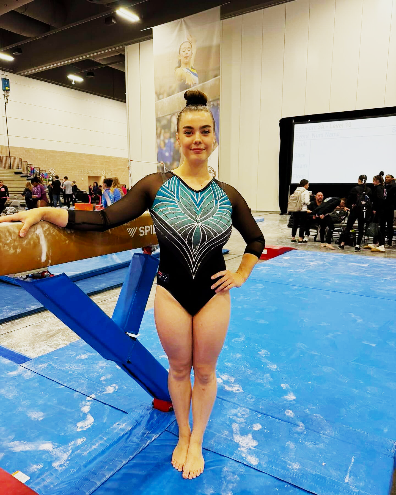
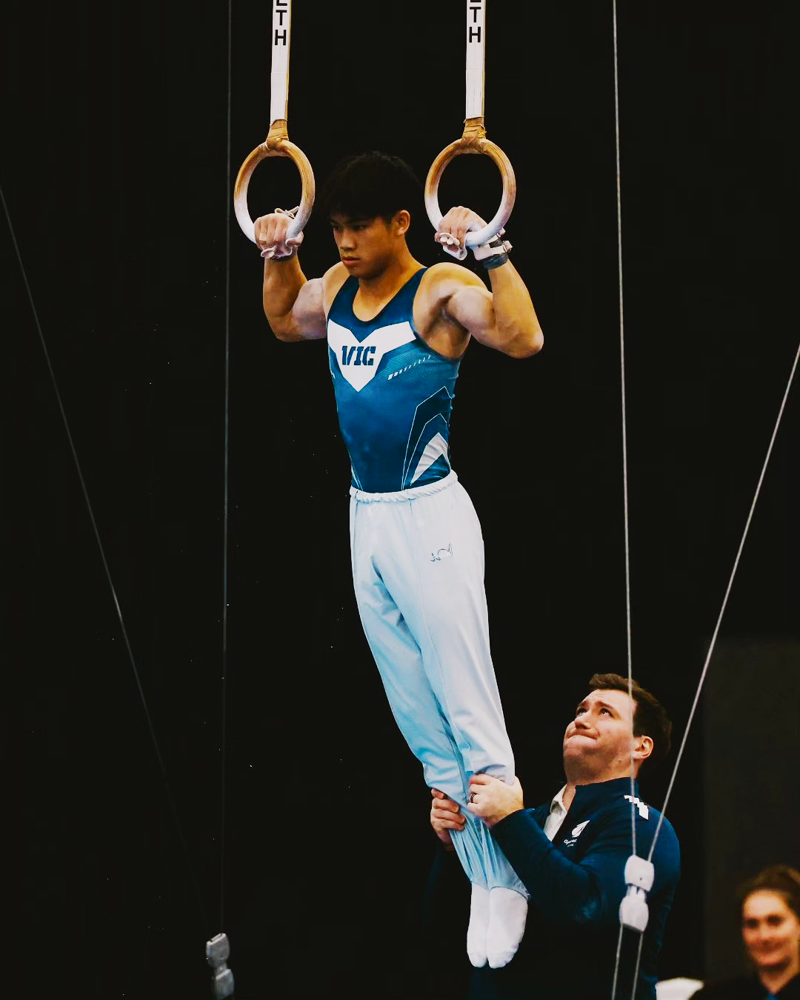

In our last profile, we looked at Waverley Gymnastics Centre and what it means to sit at the top of one discipline. BTYC Gymnastics, based at 360 Springvale Road in Donvale, presents a different kind of story: what it looks like to be genuinely competitive in two at once.
Most Victorian gymnastics clubs are primarily WAG, with MAG either a small secondary offering or absent altogether. Running both at a competitive level simultaneously requires depth in coaching, facilities, and athlete development that relatively few clubs can sustain. BTYC has been doing it since the club was founded in 1963 by ex-Olympian Wendy Grant, initially as a physical culture club. Their current facility in Donvale was rebuilt after a fire destroyed the original in 1998, and the club notes that it served as the VAGA headquarters for eight years in the 1980s. They also count the Olympic apparatus from the 2000 Sydney Games among the gym's equipment, which is a nice detail.
The numbers in our database, covering 2024, 2025, and the 2026 season to date, give some shape to what that dual-sport programme looks like in practice.
The WAG programme
On the women's side, BTYC has 519 results across 29 competitions in our database, covering 92 unique athletes. At the elite end, the standout name is Annabella Geraghty, who competes at Level 10 and posted a 53.6 all-around at the 2026 Senior Victorian Championships, where she took the title. She has been consistently near the top of the Level 10 leaderboard across multiple competitions this season, adding wins at the BTYC Senior Extravaganza and Senior Judges Invitational, and placed second at the 2025 Senior Vics with 50.166. She's one of the most consistent Level 10 performers in our WAG database.

Below Geraghty, there's genuine competition depth. Tahli Danelutti has posted a 49.75 AA at Level 10. Leah Boulos is competing at Level 9 and was named to the 2026 State Team after posting 48.349 at the Senior Vics. Arabelle Ng (47.2 at Level 8) and Aleila Brand-Starkey were both named to the Border Challenge squad. Nicole Muscroft previously competed at Balance Gymnastics and has since progressed to Level 9 at BTYC, earning a Border Challenge selection along the way.
In terms of L8+ AA medals, the WAG programme has taken 8 gold, 9 silver, and 6 bronze across our data. That puts BTYC in solid mid-range company on the WAG side, not the dominant force that Waverley is, but consistently placing athletes on podiums at the elite levels.
The MAG programme
The men's programme is where BTYC's numbers really pull away from the field. Our database has 614 MAG results across 25 competitions, covering 71 athletes. At Level 8 and above in AA events, BTYC has accumulated 71 medals: 22 gold, 23 silver, and 26 bronze. That's a substantial haul and the largest in our MAG dataset.
The depth runs all the way through the programme. Samuel Vagg has posted a 72.7 AA at Level 10, William Hansen-Cooper 72.6 at Level 9, Kynan Whitehead 72.3 and Blake Ceola 71.8 at Level 10. Four athletes within one point of each other at the top of the Level 9-10 range is a measure of how competitive the programme is internally, which tends to push everyone higher.

At the top of that group is Carlos Lai, who has been competing at Senior International level and posted a 75.45 AA at the 2026 Senior Victorian Championships, finishing second. He also placed second at the 2025 Senior Vics with 75.15. His results across 2024 and 2025 show consistent scoring in the 70-75 range at the highest domestic MAG level in our database, and he appears to have been improving year on year. Our database doesn't capture international competition results, so we can't speak to what he's been doing on the international circuit, but within what we can see, he's firmly among the top MAG athletes in Victorian competition.
Four athletes within one point of each other at the top of the Level 9-10 range is a measure of how competitive the programme is internally.
The 2026 state team
The data point that probably says the most about the MAG programme's standing in Victorian gymnastics is the 2026 state team composition. Nine BTYC athletes were named to the 2026 MAG State Team, with head coach Lachlan Graham leading the state coaching staff, alongside fellow BTYC coaches Gordon Wallace and Jayden Boddy. BTYC also provided six of the twelve athletes named to the MAG Border Challenge Team.
When the head coach of the state team comes from one club, and a majority of the Border Challenge squad comes from the same place, it reflects something beyond just having a few good athletes. It speaks to the quality and trust that has built up around that programme over time.
Team gymnastics
One more number worth mentioning: BTYC's MAG team event record. Across our database, the club has taken 40 team golds, 14 silvers, and 5 bronzes in team competitions. Team gymnastics requires consistent depth across multiple athletes, not just a couple of standouts carrying the squad. A gold count of 40 across three seasons is a reflection of a programme where the standard is broad as well as deep.